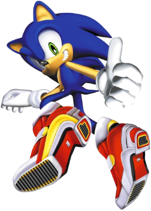
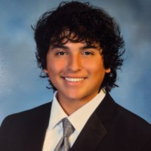
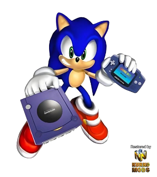
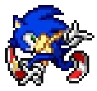
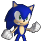
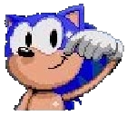
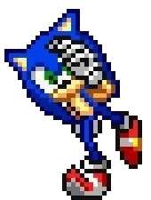
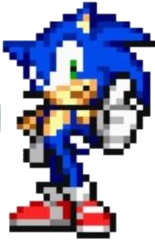

WELCOME! ようこそ！


Hi! I'm Joshua, a biomedical engineering student at Stevens Institute of Technology (class of 2029). I've built sensor rigs and trained deep learning models for medical device research, and now I want to build the devices themselves. This summer I researched guidewire contact force estimation for stroke therapy.
I'm looking for a Spring 2027 co-op in medical devices. Look around, click a project for the full case file, and download my resume or find me on LinkedIn ★
★ FEATURED RESEARCH ★
{{ p.status }}
{{ p.title }}
{{ p.summary }}
{{ m.v }}{{ m.l }}
PROJECTS

{{ p.track }}
{{ p.title }}
{{ p.summary }}
EXPERIENCE
Undergraduate Researcher / Lab AssistantJUN 2026 – AUG 2026
Dr. Yong Shi's Lab, StevensBuilt and maintained the lab's data-collection equipment. Led a subteam of high schoolers from Liberty Science Center's Partners in Science program, and presented weekly to faculty, a graduate mentor, and a practicing physician.Cashier / CookJAN 2026 – APR 2026
Wingstop, Hoboken, NJRan the register and phone orders during peak rush, closed the store, and used Spanish daily with customers and coworkers.Warehouse AssistantJUL 2025 – AUG 2025
MDC Electrical Contractors, Newark, NJReceived, logged and staged electrical supplies for active job sites. This is where the idea for MaterialFlow came from.Product Demonstrator & Consumer Research AssistantSEP 2023 – MAY 2025
Pick Marketing, Bayonne, NJRan weekend demos and blind taste tests for national brands, mostly in Hispanic grocery stores, while in school full time.SKILLS
{{ g.name }}
{{ ch }}
{{ s.n }}{{ s.lvText }}




